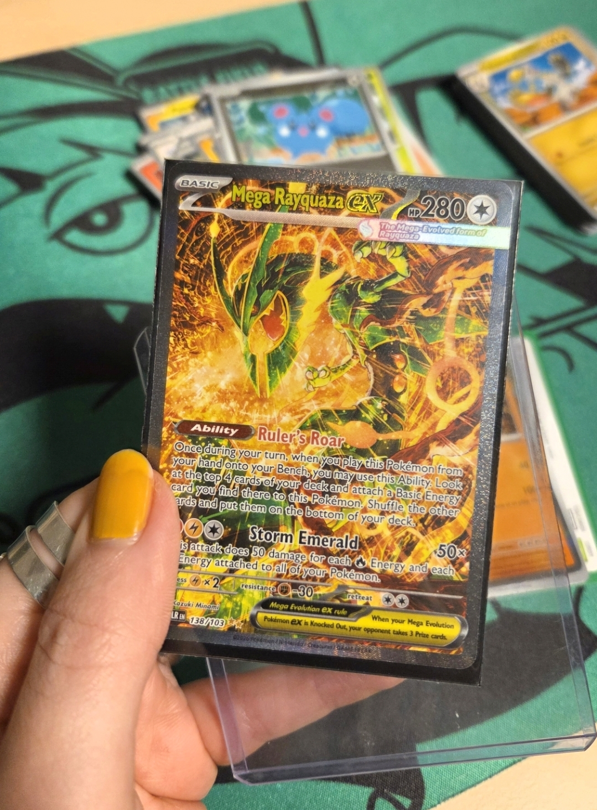
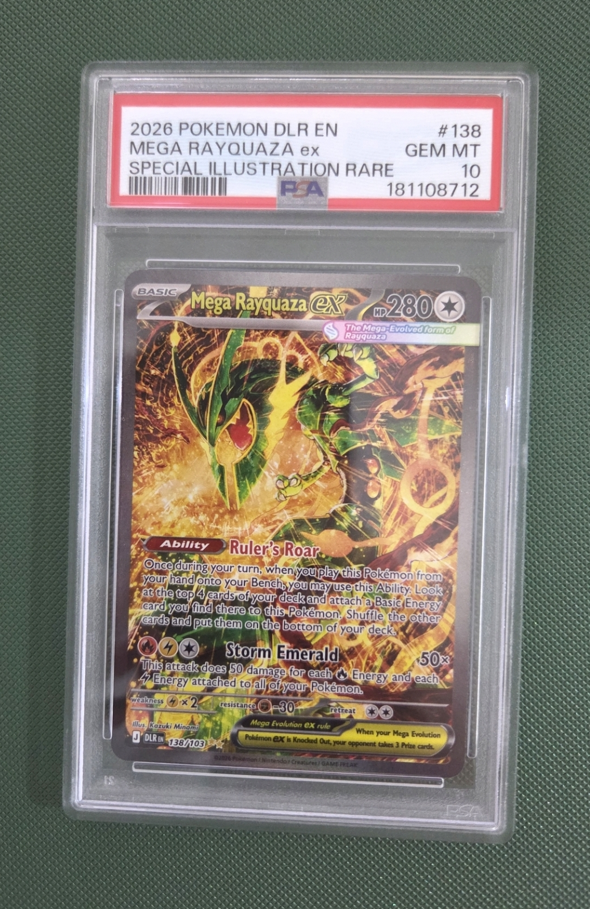

Van laatste booster naar PSA 10: mijn Rayquaza-avontuur!
Een Mega Rayquaza ex SIR uit mijn laatste Delta Reign-booster, razendsnel terug van PSA als een 10!

Mijn allerlaatste booster tijdens de prerelease
Op 25 oktober was ik bij de Delta Reign-prerelease bij GamerzParadize in Arnhem. Daar ga ik eigenlijk meestal heen voor prereleases. Het is altijd gezellig om alvast een nieuwe Pokémon TCG-set te ontdekken, maar deze keer werd wel héél bijzonder.
Want in mijn allerlaatste pakje zat ineens een Mega Rayquaza ex Special Illustration Rare (SIR), 138/103! 🤯 En toen ik de kaart goed bekeek, zag hij er ook nog eens ontzettend netjes uit. Zou dit misschien een PSA 10 kunnen worden?
Opsturen naar PSA? Ik twijfelde!
Ik moet eerlijk zeggen: ik ben zelf niet zo van de PSA-kaarten. Ik verzamel veel liever kaarten in mijn binders. Een mooie kaart hoort voor mij eigenlijk gewoon in mijn map, tussen de rest van mijn verzameling.
Toch begon ik te twijfelen. Pokémon verzamelen is een geweldige hobby, maar ook een behoorlijk dure. Soms moet je dan even wat verstandiger handelen, zodat je de hobby ook kunt blijven betalen. En als deze Rayquaza echt een PSA 10 zou halen, kon dat financieel natuurlijk interessant zijn.
Dus op 26 oktober, de dag na de prerelease, heb ik de kaart naar PSA in Duitsland gestuurd met de standaard tier. De aangegeven doorlooptijd was ongeveer 70 tot 90 dagen. Ik dacht dus dat ik voorlopig geduld moest hebben...
Veel sneller terug dan verwacht!
Maar nee hoor! Op dinsdag 10 november had ik mijn Rayquaza alweer in huis, inclusief beoordeling. Dat is maar 15 dagen na het opsturen! En het mooiste? PSA 10! 🎉
Ik heb het moment waarop ik de kaart terugkreeg en uitpakte ook gefilmd. In deze Instagram Reel zie je mijn PSA-unboxing en de onthulling van de grade:
Dat het zo snel ging, was voor mij echt een verrassing. Natuurlijk betekent mijn ervaring niet dat de standaard tier altijd zo snel is, maar ik klaag absoluut niet! 😂
Houden of verkopen?
En nu komt het lastige: wat ga ik met deze prachtige PSA 10 doen? Hoe blij ik ook ben met de uitslag, ik blijf een binderverzamelaar. Mijn idee is daarom om de gegrade kaart uiteindelijk te verkopen en een nieuwe, ongegrade Mega Rayquaza ex SIR 138/103 uit Delta Reign voor mijn map terug te kopen.
Wat de PSA 10 precies waard is, weten we nog niet. Er zijn op dit moment nog geen bekende afgeronde verkopen waarop ik een betrouwbare prijs kan baseren. We hebben al wel een bod van € 1.000 gekregen, maar we wachten nog even met verkopen. Een bod is natuurlijk nog geen definitieve verkoopprijs.

Hoe dan ook blijft dit een van mijn gaafste Pokémon-momenten: een prachtige pull bij GamerzParadize, de gok om hem te graden én zo snel een PSA 10 terugkrijgen. Dat vergeet ik niet snel! 💗
Wat zou jij doen: zo'n PSA 10 bewaren of verkopen om je verzameling verder uit te breiden?